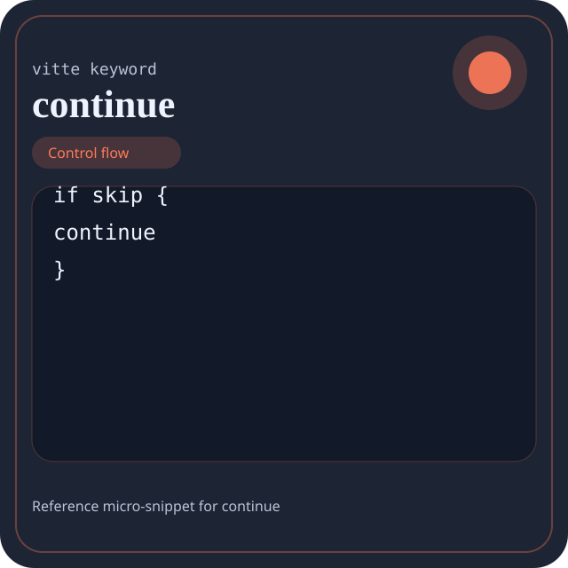

Keyword continue
continue is documented here as a full reference entry: grammatical role, semantics, canonical form, valid example, counter-example, diagnostics, interactions, and design notes.

continue.Visual anchor: each page now has its own wiki-style profile image. It shows a small code excerpt where continue appears in its most recognizable form.
Quick navigation: use the previous, summary, and next links to move through the full keyword series without manually returning to the index.
Summary
- Overview
- Definition
- Grammatical role
- Canonical syntax
- Detailed semantics
- Effect on execution
- Valid variants
- Vitte example
- Guided reading of the example
- Comparison with C
- Recommended uses
- Invalid example and diagnostic
- Common errors
- Neighbor keywords
- Common misreadings
- Implementation notes
- Presence in the book
Overview
| Field | Value |
|---|---|
| Keyword | continue |
| Family | Control flow |
| Suggested level | Beginner |
| Main neighbor | break |
| Short role | continue is a control-flow keyword that changes the program's execution path. |
| Main effect | continue immediately changes the execution path, whether by choosing a branch, repeating, interrupting, or terminating a flow. |
The keyword continue structures execution. It determines when a block opens, when a branch is chosen, when a loop continues or stops, or when an exit becomes observable.
A useful encyclopedic reading should answer three questions: where can continue appear, what does it change in the block contract, and how does the compiler signal misuse?
Definition
continue is a control-flow keyword that changes the program's execution path.
The keyword continue structures execution. It determines when a block opens, when a branch is chosen, when a loop continues or stops, or when an exit becomes observable.
Grammatical role
Interrupts the current iteration and jumps directly to the next iteration of the active loop.
This grammatical role is essential: if a reader understands the structural place of continue, they already understand much of the diagnostics that will appear when it is moved or truncated.
Canonical syntax
Canonical form: use `continue` only in its valid grammatical role.
The canonical form matters because it gives the compiler and the reader the same reference structure. A large share of diagnostics related to continue come from an abbreviated, displaced, or incomplete form.
Detailed semantics
Semantically, continue reorganizes the execution path. The right question is not only 'where is it placed?' but 'which path becomes possible, impossible, or preferred from this point onward?'
In an encyclopedic reading, continue should not be reduced to a dictionary definition. Its effect on scope, block shape, value visibility, control progression, and the diagnostic family it activates when misused must also be considered.
Effect on execution
continue immediately changes the execution path, whether by choosing a branch, repeating, interrupting, or terminating a flow.
In other words, the presence of continue is not merely syntactic: it helps the reader predict what will be executed, produced, exposed, or forbidden from this point in the program.
Valid variants
- use `continue` only in its valid grammatical role.
These variants are not free synonyms. They indicate the legitimate forms from which one can reason about diagnostics, scope differences, or contract readability.
Vitte example
proc count_non_zero(values: list[int]) -> int {
let acc: int = 0
for value in values {
if value == 0 { continue }
set acc = acc + 1
}
give acc
}This example shows continue in a nominal context. It should be read globally: where the contract begins, which values are constrained, which output becomes observable, and why the presence of the keyword is justified.
Guided reading of the example
- First locate the full construction that contains
continue, not the isolated word. - Then identify which contract becomes visible because of
continue: type, branch, binding, module, exit, or advanced boundary. - Finish by checking the observable effect produced by the construction that contains
continue. - For a control keyword, mentally reconstruct the possible paths and the ones that become impossible.
This guided reading is intentionally closer to a reference page than to a tutorial: it helps reconstruct the exact role of continue in a complete block.
Comparison with C
/* C comparison: use an explicit loop and keep the branch purpose visible. */For this keyword, the parallel with C remains approximate. The comparison mainly indicates that in C the same idea is often spread across file conventions, operators, or less explicit control structures.
The source of truth remains Vitte grammar and semantics. The comparison with C should be read as a cultural marker, not as a parallel specification.
Recommended uses
continue deserves to appear when it simplifies the reading of the block's global contract, not when it merely adds one more surface form.
When to use it
- When
continuemakes the block contract more explicit at first reading. - When it reduces the number of implicit assumptions the reader must reconstruct mentally.
- When a branch choice, repetition, or flow exit must be made visible.
When to avoid it
- Avoid
continuewhen another, more precise keyword already carries the block's intent. - Avoid
continuewhen it adds only surface noise without clarifying the contract. - Avoid reading or teaching it as an isolated token with no relation to the full structure.
Common pitfalls
- Using
continuein a grammatical layer where it does not belong. - Confusing the role of the keyword with the role of the full surrounding block.
- Showing only the nominal form and never how the contract fails.
Invalid example and diagnostic
proc bad_continue() -> int {
continue
give 0
}The control-flow surface is broken because the keyword is not used in a valid loop context.
The counter-example is not merely wrong: it is wrong in an instructive way. It shows which grammar or execution-contract assumption is no longer accepted when continue is moved, truncated, or combined with the wrong context. Concretely, the jump to the next iteration appears outside a valid loop.
A good encyclopedic counter-example does not show arbitrarily broken code: it isolates the precise reason why continue can no longer support the expected contract. Its teaching value is diagnostic before it is syntactic.
Common compilation errors
| Typical message | Usual cause | Fix |
|---|---|---|
unexpected token near continue | The keyword appears in an invalid form or grammatical layer. | Return to the canonical form and verify placement and delimiters. |
type mismatch | The keyword participates in a block whose value contract is incoherent. | Realign the surrounding types, branches, or produced values. |
invalid construct | The keyword is present but the surrounding construction is incomplete. | Restore the missing branch, declarative part, or operands. |
This table does not replace the compiler's exact diagnostics. It serves as a mental map: when continue fails, the problem usually comes from an invalid grammatical form, an incoherent type contract, or an incomplete construction.
Neighbor keywords
| Keyword | Operational difference |
|---|---|
break | Direct neighboring keyword: it helps explain what continue does, either by contrast or by complement. |
Comparison with neighboring keywords is essential on a wiki-style page: continue is better understood when one knows precisely what it does not do.
Common misreadings
- Reducing
continueto a local token instead of reading it as part of a full construction. - Explaining only the syntax and forgetting the reading or diagnostic contract it imposes.
Implementation and diagnostic notes
- Useful diagnostics for this family usually signal an incomplete branch shape, a mistyped condition, or an illegal placement in control flow.
- In a compiler, these keywords directly influence control-flow graph construction or intermediate representation building.